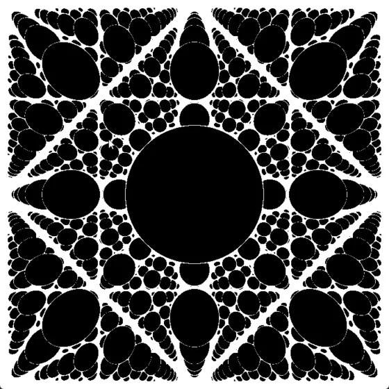

Ray Marcher (OpenGL fragment shader)
Real-time signed-distance-field ray marcher in a GLSL fragment shader, with a free-fly camera and a Sobel edge pass through a framebuffer object.
- Technologies
- C++, OpenGL, GLSL, SDF, Sphere tracing, FBO, Post-processing
- Period
- Feb–Apr 2026
- Status
- In progress
- Directory
- Graphics and GPU Computing · Featured
- Links
- Source for Ray Marcher (OpenGL fragment shader) · Video of Ray Marcher (OpenGL fragment shader)
Overview
A real-time renderer in C++ and OpenGL that draws a full-screen quad and does all the scene work in a GLSL fragment shader. Each pixel casts one ray and steps it through a scene defined by signed distance functions (SDFs). A second pass runs a Sobel edge filter on the result through a framebuffer object. A free-fly camera written for the engine is used to move through the scene and debug it. The project is a work in progress, and the README says so.
Implementation
- Sphere tracing. At each step the ray advances by the distance to the nearest surface, for up to 56 steps, with a hit threshold of 0.001 and a far limit of 1000 units.
- Scene. SDFs for a sphere, an axis-aligned box (written as a Chebyshev distance) and a plane. Objects are combined with
min()(union).mod()on the sample position repeats the geometry infinitely, and a sine term displaces the surface. - Normals. Central differences of the distance field with a step of 0.001.
- Camera. A C++ camera (WASD and mouse) passes its position and forward, up and right vectors to the shader as a uniform struct. Primary rays are built from those vectors per pixel.
- Post-processing. Pass 1 renders into an FBO with a colour texture and a depth-stencil renderbuffer. Pass 2 samples that texture with 3×3 Sobel kernels, thresholds the gradient magnitude and draws the edges to the screen.

Architecture
SDF scene (fragment shader)
→ ray march per pixel
→ FBO colour texture
→ Sobel pass
→ default framebufferChallenges / Limitations
- The scene is hardcoded in the shader and cannot be changed at run time.
- Screen coordinates are normalised by a fixed constant instead of the viewport size.
- No acceleration structure, and no lighting model beyond normal-based shading.
- The C++ and shader code need cleanup and comments.
Results / Validation
Screen recordings: ray marching demo and post-processing demo. The frame-rate drops in them come from screen-capture overhead.
Comparison with the compute-shader version: Fragment-shader vs compute-shader ray marching.
Source and references
- Repository: github.com/xerfzy/Ray_marcher_using_fragment_shader_in_opengl
- Article: Fragment-shader vs compute-shader ray marching
- Related: Ray Marcher (compute shader demo) — Ray marching in an OpenGL compute shader that writes an RGBA32F image, shown on a full-screen quad.
- Related: CPU Ray Tracer — C++ ray tracer built from Ray Tracing in One Weekend: Lambertian, metal and dielectric materials, multi-sample anti-aliasing and defocus blur, written out as PPM.